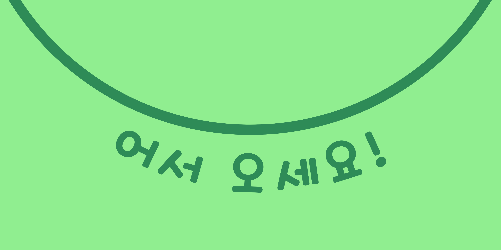

Kia ora taiao!
I'm Sae and this is the beginning of my first website. I'm here to blog my learning progress as part of my DevAcademy journey.
After that, who knows what the future holds? For now, this is a window into my life and I'd love to share with you what I'm doing, thinking about and learning in life!
about me
Originally born in Seoul, South Korea, I moved to Christchurch, Aotearoa soon after my third birthday with my family of mum, dad, and two older sisters.
Christchurch is a very peaceful and family-oriented city but it was and remains very homogenous in its population. Although Asian immigration was growing fast at the time, a lot of people chose to live in Auckland and at the time of our arrival in 1995, there were only a handful of Korean families in Christchurch.
My experience growing up as an immigrant in the Kiwi culture, especially as a little kid who wanted nothing more than to belong, shaped a lot of my experiences and had me grappling with my identity.
I'm now 30, and seeing life in a whole new way as I become in equal parts more sure about who I am as well as completely humbled my life's uncertainty. I've found a new (yet these things are not really so new are they?) way to enjoy life and I'm revelling in it. One aspect of the new path that I am on is driven by a 4 month web development course with Dev Academy.
Learning these new skills allows me to create through a whole new medium, and also lets me reflect and practice writing - something I really enjoy. I hope the sense of my excitement, gratitude and insight comes across in my subsequent blog posts and content.
Please explore and enjoy!